|
La villa romana de La Olmeda se
localiza en Pedrosa de la Vega, Palencia. El descubrimiento del
yacimiento arqueológico tuvo lugar en el verano de 1968 con motivo de la
realización de unas labores agrícolas. La villa abarca una extensión en
superficie de 4400 m2 con un total de 35 habitaciones repartidas entre
la vivienda principal y los baños, 26 de las cuales están decoradas con
1450 m2 de mosaicos polícromos conservados in situ.
Los orígenes de la primera construcción datan de finales del siglo I
inicios del siglo II, corresponde a la estructura de un edifico al norte
de la actual villa, habitada hasta finales del siglo III.
A mediados de siglo IV se produjo un cambio radical en la villa. La
antigua edificación se abandona o cambia de uso, y se levanta una nueva.
La villa se construyó con dos partes independientes unidas con un
pasillo, la zona residencial con sus termas y la zona destinada a los
trabajadores y las dependencias.
La vivienda principal, pars urbana, de unos 3.000m2 presenta planta cuadrada con con
cuatro torres angulares, de planta cuadrada en la norte y octogonal en
la fachada sur. En el centro hay un patio que en su origen fue un
peristilo, que más tarde se sustituyeron las columnas del lado sur por
una arquería de ladrillo y los restantes lados se cerraron con muros. La
zona de las termas está unida a la vivienda a través de un corredor,
presenta dos zonas: por un lado una gran habitación circular, cuyo uso
se desconoce, y por otro el vestuario, a través del cual se accede a las
distintas salas de baño: frigidarium, tepidarium y caldarium.
Posiblemente el mayor atractivo de la villa lo constituye el conjunto de
mosaicos, 1.400m2, uno de los más importantes de España. Destaca el
mosaico situado en el oecus de la casa. En la necrópolis se han
localizado más de 700 tumbas pertenecientes a distintos periodos, con
abundante material arqueológico gracias a los ajuares.
Se cree que la villa fue destruida y abandonada en el siglo VI.
La pars rustica se localiza en las proximidades del edificio principal
se han excavado estructuras que pertenecieron a la zona de trabajo de la
finca. Los graneros, alfares, talleres, cuadras y almacenes de la villa
junto con las viviendas de los trabajadores.
|
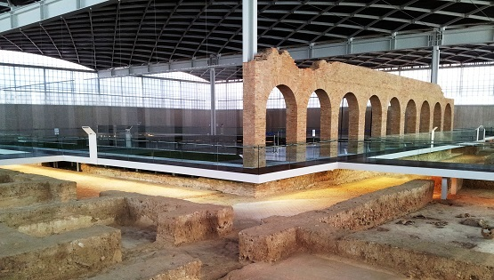 |
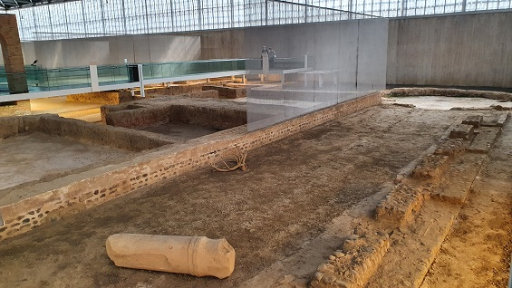 |
|
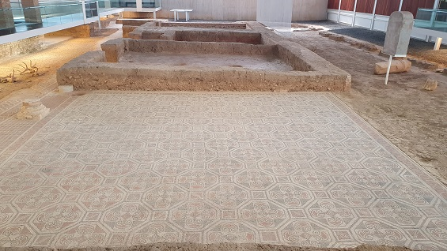 |
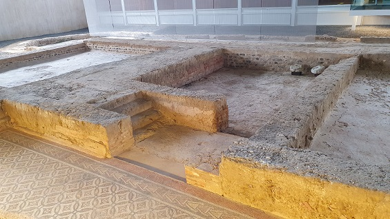 |
|
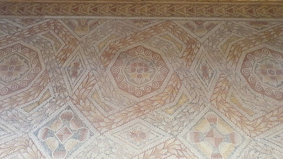 |
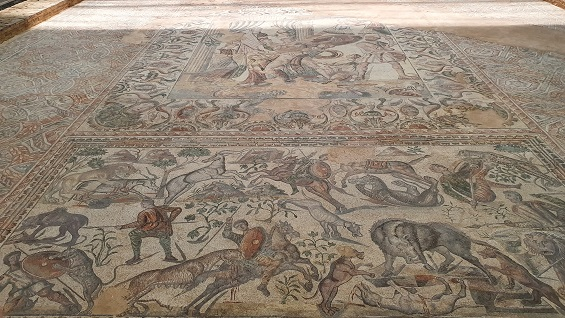 |
|
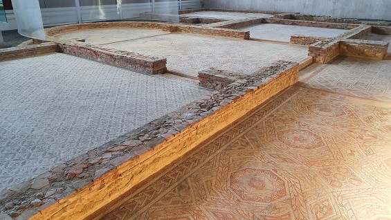 |
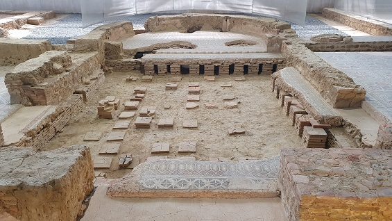 |
|
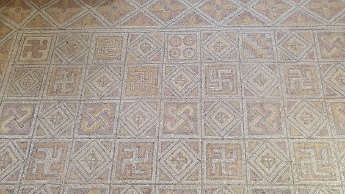 |
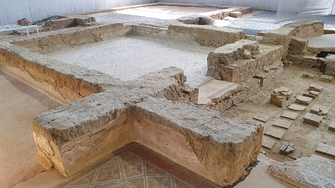 |
|
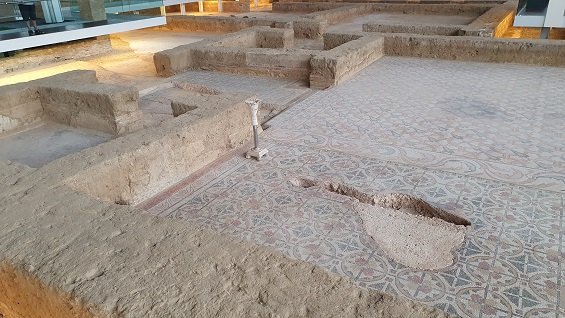 |
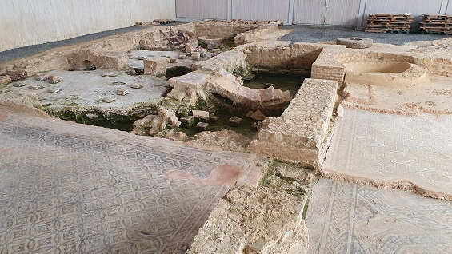 |
|
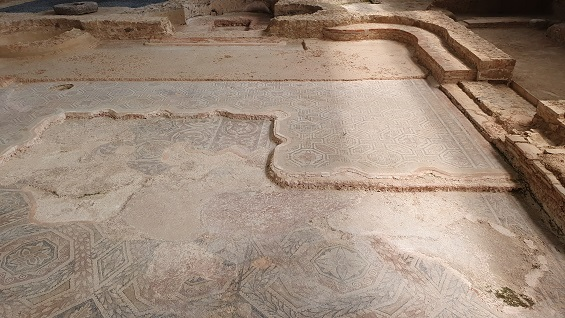 |
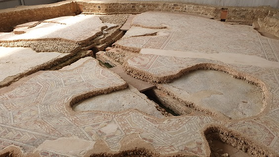 |
| |
|
Ver
Video
|